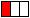
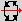
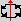
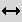
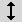
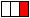
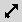

The Geomorph preview uses the Povray
coordinate system. As seen at right, the Y axis goes from bottom to
top, the X axis from left to right and the Z axis from the viewer to
the background. The Geomorph preview uses the Povray
coordinate system. As seen at right, the Y axis goes from bottom to
top, the X axis from left to right and the Z axis from the viewer to
the background.
The Geomorph preview uses the Povray
coordinate system. As seen at right, the Y axis goes from bottom to
top, the X axis from left to right and the Z axis from the viewer to
the background. The Geomorph preview uses the Povray
coordinate system. As seen at right, the Y axis goes from bottom to
top, the X axis from left to right and the Z axis from the viewer to
the background. |  Left button |
  Rotations |
|   Left / right (X), bottom / top (Y) translations |
|
|  Right button |
 Nearer / farther (Z) |
| |
Active: the preview is updated when the
height field is modified. Inactive: the preview is updated when the user clicks "Refresh". Uncheck this box when Geomorph reacts too slowly. For instance: (1) The height field being edited is larger than what the computer can support with a smooth interaction. (2) The level of detail of the preview was increased by a too high percentage. |
|||||||||||||||||||||||||||||||||
| |
Refreshes the preview area when "Auto update" is
activated, or when the area blackens while switching back and forth
between many documents (see the FAQ for the last point). |
|||||||||||||||||||||||||||||||||
| |
Increases or decreases the preview area size by
32 pixels steps. The area width ranges from 64 to 512 pixels. The default width is 128 or 256 pixels. It is deducted from the desktop size when Geomorph starts. The preview area height is 0,75 time the width (the image ratio is 4/3, the same as Povray scenes provided with Geomorph). |
|||||||||||||||||||||||||||||||||
| |
Controls the number of vertices created when the
height field is converted to triangles, relatively to the number of
pixels. For instance, the default value of 25% gives 128x128 vertices
for a 512x512 pixels height field. The percentage is divided or
multiplied by 2 at each click: 6,25%, 12,5%, 25%, 50%, 100%. The
default value of 25% should provide a smooth interaction with the
suggested hardware (a ~1000 Mhz CPU for a 512x512 height field, without
OpenGL hardware acceleration). |
|||||||||||||||||||||||||||||||||
| |
Camera management. Click on the radio button for the camera you want to activate. A camera is defined by the rotation, translation and angle parameters. The 5 cameras are recorded with the height field, in the comments area of the PNG file. Editing the height field with an other tool would probably erase them. A workaround is proposed for this in the hints section. The cameras are initialized with the values from the last active document, or if not possible, from the Geomorph default values. After the initialization, each document keeps its own cameras. A view change in one document does not affect the views of the other documents. |
|||||||||||||||||||||||||||||||||
| |
Rotation angle around the vertical axis (Y),
from 0° to 360°. |
|||||||||||||||||||||||||||||||||
| Rotation angle around the West-East axis (X), or
slant forward - backward, from 0° to 360°. When the view angle is set at 60°, the skyline appears from 22° downwards. A slant of 6° gives a skyline at roughly 2/3 of the image. Note: the preview doesn't provide a rotation around the Z axis. This would give a slanted skyline. |
||||||||||||||||||||||||||||||||||
| |
Relative distance between the observer
and the terrain. 0 means the center of the height field. |
|||||||||||||||||||||||||||||||||
| Vertical translation of the height field, from
-Y to +Y. |
||||||||||||||||||||||||||||||||||
| Lateral translation of the height field, from -X
to +X. |
||||||||||||||||||||||||||||||||||
Hozontal angle of view, from 5° to 100°,
respecting the Povray standard. With photographic cameras, the view
angle given for the focal length of the lens is most often diagonal.
Here is a correspondance table for common focal lengths:
The diagonal angle of Geomorph/Povray would be slightly more than the one given in the table, because the image ratio is 4/3 instead of 3/2. |
||||||||||||||||||||||||||||||||||
| |
This button resets the active camera to the
Geomorph defaults. |
It is sometimes difficult to set the distance or rotation scales. For instance, the forward - backward slant requires often angles between 0° and 10°. You get a fine control by 1° steps by clicking on the scale cursor with the mouse, then moving the cursor with the left - right arrows of the keyboard.
A 6° forward - backward slant with a 60° camera gives a skyline at 2/3 of the image (1/3 sky, 2/3 ground). Sometimes, you'll want to show 2/3 sky, for intance when the clouds are interesting. Then use a slant between 350 and 355°, and moves the camera towards the bottom (the HF towards the top). An example: a X rotation of 352°, a Y translation of -0,31.
If the preview computation slows down the interface too much, decrease the detail level, or uncheck the "Auto update" box.
Geomorph doesn't provide, with version 0.12, a camera parameters saving at the session level. However, if you want to reuse your preferred points of view over and over, save them in a document that you'll open each time you'll start Geomorph. The cameras of the file most recently open are reused when new documents are created.
Maybe you'll want to edit your PNG HF files with The Gimp, or better, for keeping the fine detail of the relief on 16 bits, with Filmgimp/Cinepaint. The cameras are kept inside the comments field of the PNG file. This information is not kept by the other software tools. However you can proceed like this to save and restore it:
- Copy the file under a new name.
- Edit the original file with the external software.
- When coming back into Geomorph, open the unedited copy. Geomorph would initialize the 5 cameras with the parameters found in the file.
- Open the modified document. Because Geomorph wouldn't find any camera definition in it, it would reuse the parameters found in the copy.
It may sound unnecessary to provide a view angle scale, when it is possible to get nearer or farther to the heigth field if we want to increase or decrease its relative size.Back to top
This is a matter of perspective. For instance, define two cameras, pointed on a hill a the foreground. One has a small angle (it's a telephoto lens), the other has a wide angle. Draw the nearest one farther, and the farthest one nearer, until the hill has the same size in both views. You'll see that the background hills are a lot smaller with the wide angle view than with the tele view.
The wide angle gives a depth effect, while the tele lens gives a flattening effect.
Most often, mountains seem higher when seen through a tele lens, because they take up a larger area of the image.
Use of a wide angle to get a depth effect usually involves translating the camera very close to the object. It can give the feeling that details are lacking, or worst, triangles making up the surface can be seen. A way to minimize this effect is to use a rich Povray texture, specially one with a normal component.
 Back to the documentation index
Back to the documentation index